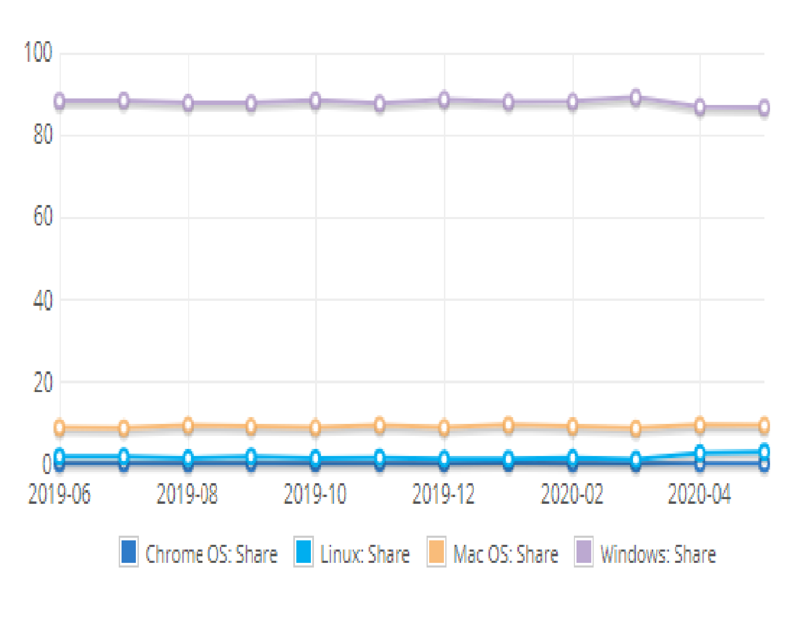

<body  bgcolor="yellow">
<h1> <font size="7" color="green"> <center>
<i><u>Operating System Market Share</u> </i>
</font></h1>
<h2> <font size="6"><u>links:</u> </font></h2>
<a href="index.html">index</a>
<br>
<a href="operating systems images.html">operating systems images</a>
<br>
<a href="types of operating systems.html">types of operating systems</a>
<br>
<a href="operating systems problems.html">operating systems problems</a>
<p><h3>
<font size="5" color="blue">
<table border="1">
    <tr><th>1</th><th>Platform</th><th>share </th><th>
    <tr><th>2</th><th>windows</th><th>87.97%</th><th>
    <tr><th>3</th><th>Mac OS</th><th>0.15%</th><th>
    <tr><th>4</th><th>Linux</th><th>2.03%</th><th>
	<tr><th>5</th><th>Chrome OS</th><th>0.42%</th><th>
	<tr><th>6</th><th>BSD</th><th>0.01%</th><th>

	</table>
	<p>


</body>
</html>